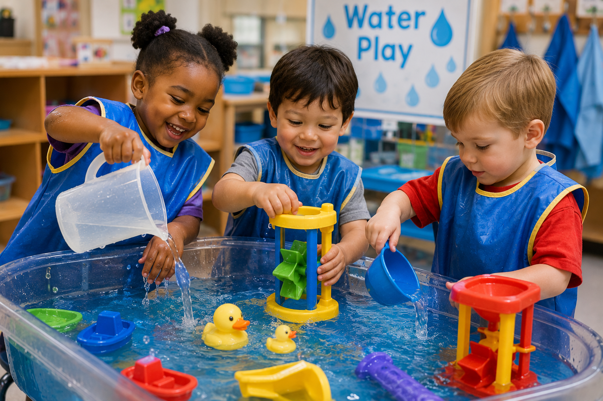

Math
Measure Water
Compare capacity using measuring cups, containers, funnels, and graduated cylinders.
Children investigate one of Earth's most amazing natural resources through hands on exploration, sensory play, science experiments, engineering challenges, and meaningful discoveries. Every splash becomes an opportunity to observe, question, predict, and learn.
Water surrounds children's everyday lives. They drink it, wash with it, splash in it, observe rain, watch puddles disappear, and notice ice and snow. Investigating water encourages curiosity while naturally introducing scientific thinking, mathematical reasoning, engineering, language development, and creative exploration.

Invite children to wonder, observe, experiment, and explain what they discover about water.
Where do we find water? What does it look, feel, sound, and smell like?
Explore freezing, melting, evaporation, condensation, and the changing states of water.
Predict, test, and compare objects that float, sink, absorb, or repel water.
Discover how people, plants, animals, and communities depend on water every day.
Weeks
Activities
Interest Areas
Hands On Exploration
Each week encourages children to observe, predict, experiment, and discover new properties of water through meaningful investigations.
What is water? Children investigate where water is found, how it feels, sounds, smells, and why every living thing needs it.
Experiment with floating, sinking, pouring, measuring, absorbing, and moving water using a variety of classroom materials.
Discover how water changes by freezing, melting, evaporating, and observing condensation through simple science experiments.
Explore rain, rivers, oceans, ponds, weather, water conservation, and how communities use and protect water.
Children strengthen skills across every developmental domain through hands on water investigations.
Describe observations, ask questions, compare results, and explain discoveries using rich vocabulary.
Measure, estimate, compare volume, count containers, and identify patterns during exploration.
Observe properties of water while making predictions, testing ideas, and recording discoveries.
Design boats, water channels, dams, funnels, and systems that move water.
Paint with water, explore watercolor art, create rain murals, and design ocean scenes.
Work together, share materials, solve problems, and celebrate discoveries through cooperative investigation.
Introduce new science words naturally during conversations, experiments, books, and investigations.
Liquid, droplet, splash, stream, river, lake, ocean, puddle, rain.
Freeze, melt, evaporate, condensation, temperature, absorb, waterproof.
Float, sink, predict, observe, compare, experiment, discover, investigate.
Full, empty, more, less, equal, measure, volume, capacity.
Gather inexpensive materials before beginning the investigation to encourage open ended exploration.
Buckets, bowls, cups, measuring cups, pitchers, bottles, tubs, and trays.
Funnels, droppers, turkey basters, pipettes, sponges, spray bottles, and strainers.
Wood, cork, rocks, plastic, foil, fabric, shells, toy animals, and natural materials.
Food coloring, ice cube trays, thermometers, clear jars, magnifying glasses, and observation journals.
Extend children's discoveries throughout every classroom learning center using meaningful water experiences.
Encourage pouring, scooping, measuring, transferring, floating, sinking, mixing, and open ended sensory exploration using a variety of containers and tools.
Experiment with floating, sinking, evaporation, melting, absorption, waterproof materials, and simple engineering investigations.
Create a car wash, aquarium, beach, fishing dock, weather station, or water park using pretend props and dramatic play materials.
Read books about oceans, rivers, rain, weather, sea animals, ponds, and the importance of clean water.
Paint with watercolors, create rain paintings, marble painting, bubble art, watercolor resist art, and ocean murals.
Draw observations, label experiments, create weather journals, and dictate stories about water discoveries.
Construct bridges, dams, canals, harbors, rivers, and communities that include lakes and waterways.
Investigate bubbles, foam, ice, warm water, cold water, textured objects, shells, stones, and natural materials.
Build vocabulary, communication, and comprehension while exploring the many forms of water.
Read stories and nonfiction books about rain, oceans, rivers, lakes, weather, and the water cycle.
Encourage children to describe observations, compare experiments, and explain predictions.
Draw pictures and dictate observations after each investigation.
Create classroom books about rainy days, puddles, oceans, rivers, and favorite water experiences.
Children naturally explore mathematics and scientific thinking while experimenting with water.
Compare capacity using measuring cups, containers, funnels, and graduated cylinders.
Predict and test a variety of classroom objects while recording observations.
Design boats using recycled materials and test how much weight they can safely carry.
Create channels, ramps, and tubing systems that move water from one location to another.
Move like falling raindrops, gentle showers, heavy storms, rivers, and ocean waves.
Pretend to swim, float, dive, paddle, splash, and move like sea animals.
Sing songs about rain, rivers, oceans, weather, and the importance of clean water.
Create rhythm patterns by clapping, tapping, and pretending to splash through puddles.
Take the investigation outside where children can observe water in nature and discover how it shapes the world around them.
Observe rainfall, collect rainwater, compare puddles, and notice how rain changes the environment.
Visit a pond, creek, or stream to observe insects, frogs, fish, birds, and aquatic plants.
Place shallow containers of water in sunny and shady locations and compare what happens over several days.
Care for classroom gardens while observing how plants depend on water to grow.
Encourage families to continue water investigations together at home.
Find all the ways your family uses water throughout one day.
Test safe household objects in a tub or sink and compare predictions with results.
Observe rainy days, sunny days, puddles, clouds, and changing weather together.
Practice turning off faucets, taking shorter showers, and caring for our water resources.
The Water Study supports learning across every developmental domain.
Children expand vocabulary while discussing observations, asking questions, and recording discoveries.
Practice cooperation, sharing materials, taking turns, and solving problems together.
Develop scientific reasoning through prediction, experimentation, comparison, and investigation.
Strengthen fine motor skills while pouring, squeezing, scooping, stirring, and transferring water.
Observe children's thinking, questions, and discoveries throughout the investigation.
Notice how children make predictions, test ideas, and explain results.
Record children's conversations and explanations during experiments.
Save drawings, science journals, graphs, and photographs of investigations.
Compare children's predictions, vocabulary, and understanding from the beginning and end of the study.
Allow children's curiosity to guide investigations instead of providing immediate answers.
Children learn through repetition. Repeat favorite investigations with new materials.
Take photographs of experiments and display children's observations throughout the classroom.
Provide opportunities every day for children to touch, explore, compare, and investigate water.
Every water investigation should include conversations about staying safe around water.
Children should always explore water with a responsible adult present.
Practice walking carefully around water tables, puddles, and wet surfaces.
Discuss life jackets, pool rules, and listening to adults near lakes, pools, and rivers.
Teach children that water is fun, valuable, and deserves to be used wisely and safely.
Quality literature helps children deepen their understanding of water while encouraging vocabulary, curiosity, and scientific thinking.
Read nonfiction and fiction books about oceans, sea life, beaches, tides, and marine habitats.
Explore stories about clouds, storms, puddles, rainbows, and the changing weather.
Learn about frogs, ducks, turtles, fish, insects, and other freshwater habitats.
Discover rivers, waterfalls, glaciers, lakes, and oceans found across our planet.
Encourage children to design, build, test, and improve solutions using water.
Build boats from recycled materials and test how many objects they can safely carry before sinking.
Use tubing, gutters, funnels, and ramps to guide water from one location to another.
Experiment with rocks, blocks, sand, and natural materials to slow or redirect water.
Explore how moving water can turn simple wheels and move lightweight objects.
Introduce the continuous movement of water through engaging hands on experiences.
Watch shallow containers of water slowly disappear over several sunny days.
Observe droplets forming on cold cups, bottles, and jars.
Create simple rain cloud experiments using shaving cream, water, and food coloring.
Freeze water into ice, observe melting, and compare changes in temperature.
Extend children's discoveries with related curriculum studies.
Investigate sunshine, clouds, rain, wind, and seasonal weather patterns.
Discover how plants depend on water, sunlight, soil, and care to grow.
Explore texture, measurement, construction, and sensory discovery using sand.
Learn about aquatic animals, habitats, and the importance of clean water.